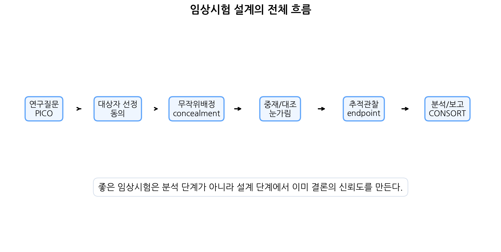
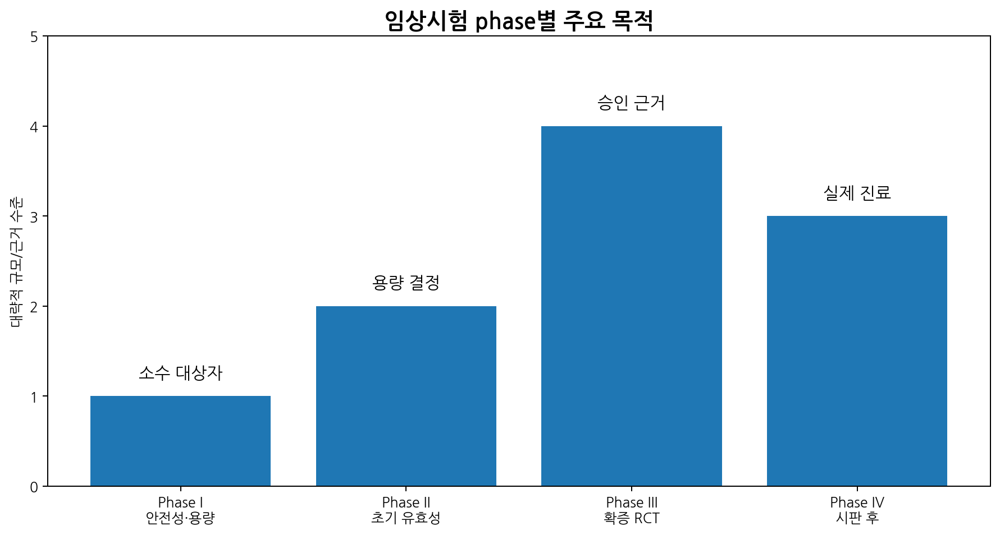
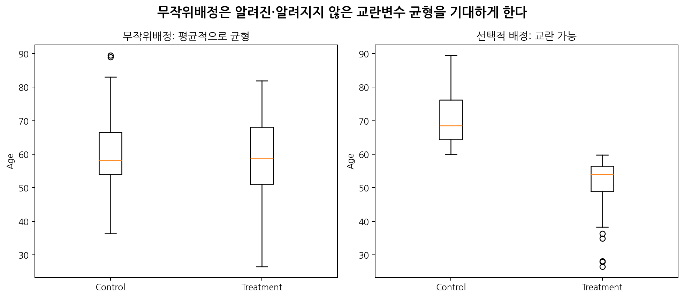
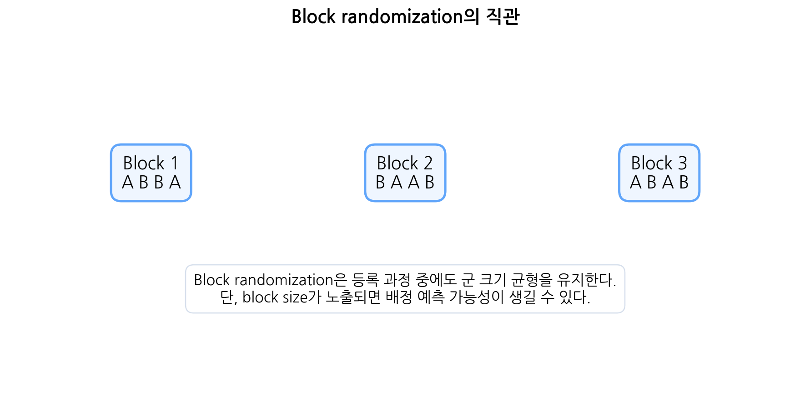
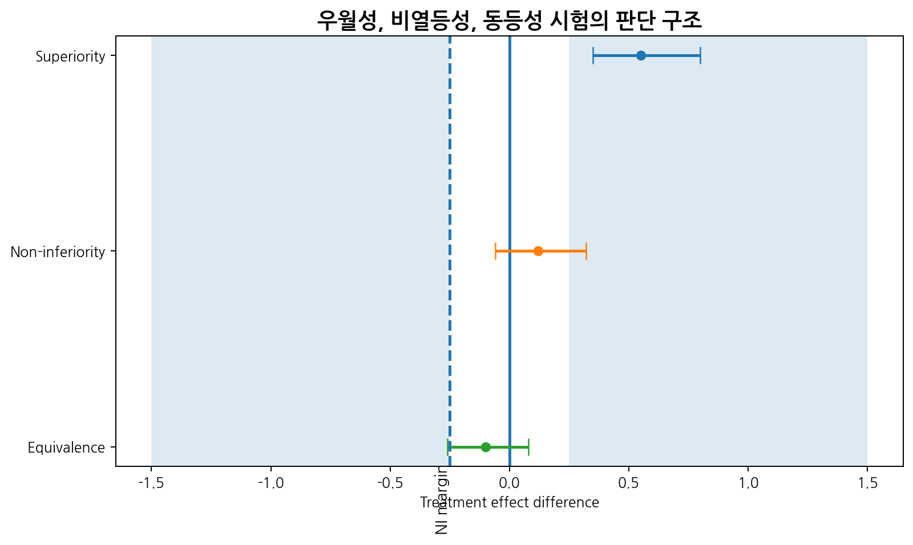
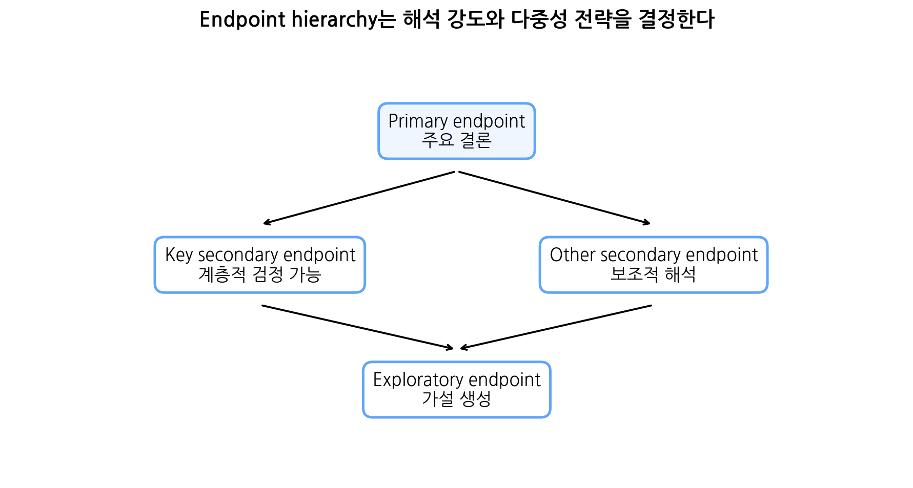
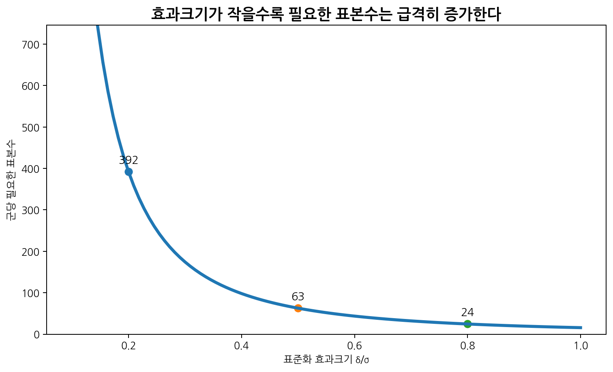
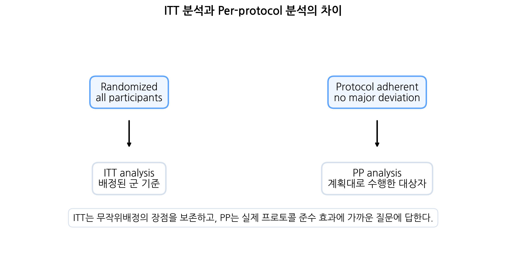
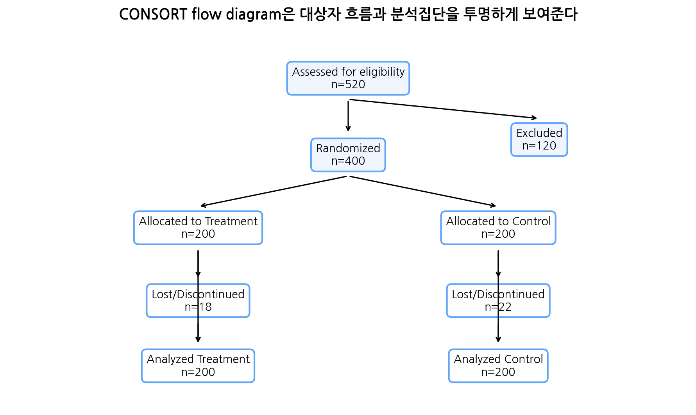

19.2 Primary endpoint
Primary endpoint는 시험의 주요 결론을 결정하는 가장 중요한 outcome이다. 표본수는 보통 primary endpoint를 기준으로 계산한다.
Primary endpoint가 명확해야 하는 이유는 다음과 같다.
- 연구의 주요 가설을 정의한다.
- 표본수 계산의 근거가 된다.
- 1종 오류 통제의 중심이 된다.
- 연구 성공 여부를 판단한다.
- 결과 해석의 우선순위를 정한다.
이번 장에서는 임상시험 설계(clinical trial design)의 핵심 원리를 심화 수준에서 학습한다. 지금까지 우리는 다양한 통계모형을 배웠다. 선형회귀, 로지스틱 회귀, Poisson 회귀, Cox 모형은 모두 자료가 이미 수집된 뒤 분석하는 방법처럼 보일 수 있다. 하지만 임상시험에서는 통계분석이 연구 마지막 단계에 갑자기 등장하는 것이 아니다. 연구 질문, endpoint, 대조군, 무작위배정, 눈가림, 표본수, 분석원칙은 모두 시험 시작 전에 정해져야 한다.
임상시험은 새로운 치료, 약물, 백신, 의료기기, 수술법, 진단전략, 생활습관 중재, 디지털 헬스케어 intervention의 효과와 안전성을 평가하기 위한 핵심 연구 설계이다. 특히 무작위배정 임상시험(randomized controlled trial, RCT)은 치료 효과의 인과적 추론을 위해 가장 강력한 설계 중 하나로 여겨진다.
그러나 RCT라고 해서 자동으로 좋은 연구가 되는 것은 아니다. 다음 요소가 부실하면 무작위배정 시험도 편향되거나 해석이 어려워질 수 있다.

이번 장의 핵심은 다음 질문에 답하는 것이다.
임상시험 결과를 신뢰하려면 분석방법뿐 아니라 설계와 운영에서 무엇이 사전에 명확히 정해져야 하는가?
임상시험 설계의 핵심은 연구 질문에 맞는 population, intervention, comparator, endpoint, 무작위배정, 눈가림, 표본수, 분석집단을 사전에 명확히 정하는 것이다.
| 질문 | 연결되는 개념 |
|---|---|
| 임상시험은 관찰연구와 무엇이 다른가? | 중재 배정 |
| RCT가 인과추론에 강한 이유는 무엇인가? | 무작위배정, 교란 균형 |
| Allocation concealment와 blinding은 어떻게 다른가? | 선택편향 vs 수행·측정편향 |
| 대조군은 어떻게 선택해야 하는가? | placebo, active control, usual care |
| 우월성, 비열등성, 동등성 시험은 어떻게 다른가? | trial objective, margin |
| Primary endpoint는 왜 하나로 명확히 정해야 하는가? | 연구의 주요 결론 |
| Composite endpoint와 surrogate endpoint의 위험은 무엇인가? | 해석 가능성, 임상적 타당성 |
| 표본수 계산에 필요한 요소는 무엇인가? | 효과크기, 변동성, 유의수준, 검정력 |
| ITT 분석은 왜 중요한가? | 무작위배정 원칙 보존 |
| 중간분석과 다중성은 왜 통제해야 하는가? | 1종 오류 증가 |
| 임상시험 논문을 읽을 때 무엇을 확인해야 하는가? | CONSORT, SAP, 분석집단 |
이번 수업이 끝나면 학생들은 다음을 할 수 있어야 한다.
임상시험은 사람을 대상으로 특정 중재의 효과와 안전성을 평가하는 연구이다. 여기서 중재는 약물에만 국한되지 않는다.
| 중재 유형 | 예 |
|---|---|
| 약물 | 항암제, 항바이러스제, 항고혈압제 |
| 백신 | 감염 예방 백신 |
| 의료기기 | 스텐트, 인공관절, 모니터링 장비 |
| 수술법 | 복강경 수술 vs 개복수술 |
| 방사선치료 | 표준 방사선 vs 저분할 방사선 |
| 생활습관 중재 | 운동, 식이, 금연 프로그램 |
| 진단전략 | 새로운 검사 알고리즘 |
| 디지털 중재 | 앱 기반 혈당관리, 원격 모니터링 |
임상시험은 관찰연구와 달리 연구자가 중재를 배정한다. 이 배정이 무작위로 이루어지면 무작위배정 임상시험이 된다.
| 구분 | 임상시험 | 관찰연구 |
|---|---|---|
| 중재 배정 | 연구자가 배정 | 자연적으로 결정 |
| 교란 통제 | 무작위배정으로 기대 | 설계·분석에서 조정 |
| 인과추론 | 상대적으로 강함 | 교란 가능성 큼 |
| 윤리·비용 | 복잡하고 비용 큼 | 상대적으로 쉬울 수 있음 |
| 일반화 가능성 | 엄격한 기준으로 제한 가능 | 실제 진료 반영 가능 |
| 대표 분석 | ITT, 회귀/생존분석 | 회귀, 매칭, 가중치 등 |
RCT는 인과추론에 강하지만, 비용과 시간이 많이 들고 엄격한 포함·제외 기준 때문에 실제 진료 환경과 다를 수 있다. 따라서 임상시험과 관찰연구는 서로 대체 관계라기보다 서로 보완적인 근거를 제공한다.
가장 기본적인 병렬군 RCT는 다음 흐름을 가진다.
예시는 다음과 같다.
| 구성요소 | 예 |
|---|---|
| 대상자 | 조절되지 않는 고혈압 환자 |
| 중재군 | 신약 A |
| 대조군 | 기존 표준치료 |
| Primary endpoint | 12주 후 수축기혈압 변화 |
| 무작위배정 | 1:1 block randomization |
| 눈가림 | double-blind |
| 분석 원칙 | intention-to-treat |
| 주요 분석 | ANCOVA 또는 선형회귀 |
임상시험은 개발 단계와 목적에 따라 phase로 구분한다.

| Phase | 주요 목적 | 일반적 특징 |
|---|---|---|
| Phase I | 안전성, 내약성, 약동학, 용량 탐색 | 소수 대상자, 건강인 또는 환자 |
| Phase II | 초기 유효성, 용량 결정, 추가 안전성 | 중간 규모, endpoint 탐색 |
| Phase III | 확증적 유효성, 안전성, 규제 승인 근거 | 대규모, RCT, 사전 정의된 primary endpoint |
| Phase IV | 시판 후 안전성, 장기 효과, 실제 진료 자료 | 실제 사용 환경, 드문 이상반응 |
Phase III는 보통 확증적 시험이며, 규제 승인이나 진료지침 반영의 핵심 근거가 된다. Phase IV는 실제 진료 환경에서 장기 안전성과 효과를 확인하는 데 중요하다.
임상시험은 phase뿐 아니라 연구 목적에 따라 탐색적(exploratory) 연구와 확증적(confirmatory) 연구로 나눌 수 있다.
| 구분 | Exploratory trial | Confirmatory trial |
|---|---|---|
| 목적 | 가설 생성, 용량 탐색 | 사전 가설 검정 |
| endpoint | 여러 후보 가능 | 명확한 primary endpoint |
| 표본수 | 상대적으로 작음 | 충분한 검정력 |
| 분석 | 탐색적 해석 | 사전 정의된 주 분석 |
| 다중성 | 유연할 수 있음 | 엄격한 통제 필요 |
| 결론 | 추가 연구 필요 | 임상적 의사결정 근거 |
확증적 임상시험에서는 사전 정의가 매우 중요하다. 시험이 끝난 뒤 유리한 endpoint나 subgroup만 선택하면 false positive 위험이 증가한다.
임상시험의 연구 질문은 PICO 구조로 정리할 수 있다.
| 요소 | 의미 | 예 |
|---|---|---|
| P | Population | 만성 B형간염 환자 |
| I | Intervention | 새로운 항바이러스제 |
| C | Comparator | 기존 표준치료 |
| O | Outcome | 48주 HBV DNA suppression |
명확한 PICO는 프로토콜 전체를 결정한다.
연구 질문:
기존 치료로 조절되지 않는 제2형 당뇨병 환자에서 신약 A는 표준치료 대비 24주 후 HbA1c를 더 많이 감소시키는가?
PICO는 다음과 같다.
| 요소 | 내용 |
|---|---|
| P | 기존 치료로 조절되지 않는 제2형 당뇨병 환자 |
| I | 신약 A 추가 |
| C | 위약 또는 표준치료 지속 |
| O | 24주 후 HbA1c 변화량 |
이 연구에서는 결과변수가 연속형이므로 primary endpoint 분석은 선형회귀 또는 ANCOVA가 될 수 있다. 기저 HbA1c를 조정하면 검정력이 증가하고 더 정밀한 추정이 가능하다.
최근 임상시험에서는 단순히 endpoint와 분석방법만 정하는 것을 넘어 estimand를 명확히 하도록 요구한다. Estimand는 임상시험이 실제로 추정하려는 치료 효과의 정확한 정의이다.
Estimand를 구성하는 요소는 다음과 같다.
| 요소 | 질문 |
|---|---|
| Population | 어떤 대상자 집단에서의 효과인가? |
| Treatment condition | 어떤 치료전략을 비교하는가? |
| Endpoint | 무엇을 결과로 보는가? |
| Intercurrent event | 치료 중단, rescue medication, 사망 등을 어떻게 다루는가? |
| Summary measure | 평균 차이, OR, HR, risk difference 등 무엇인가? |
예를 들어 치료 중단 후에도 무작위배정군 기준으로 결과를 비교할 것인지, 치료를 실제로 지속한 경우의 효과를 볼 것인지에 따라 estimand가 달라진다.
무작위배정(randomization)은 대상자를 중재군과 대조군에 우연에 의해 배정하는 절차이다. 무작위배정의 핵심 목적은 치료군 간 비교가능성을 확보하는 것이다.
무작위배정은 다음에 도움을 준다.

무작위배정은 연구자가 알고 있는 변수뿐 아니라 알지 못하거나 측정하지 못한 변수까지 평균적으로 균형을 맞추기 위한 설계 장치이다.
Simple randomization은 각 대상자를 독립적으로 무작위 배정하는 방법이다.
예를 들어 각 환자에게 50% 확률로 치료군 또는 대조군을 배정한다.
장점은 단순하고 예측하기 어렵다는 점이다. 단점은 표본 수가 작을 때 군 크기 불균형이 생길 수 있다는 점이다.
예를 들어 총 20명을 1:1로 배정하려고 해도 simple randomization에서는 우연히 14:6처럼 불균형이 생길 수 있다.
Block randomization은 일정한 block 안에서 배정 비율을 맞추는 방법이다. 예를 들어 block size가 4이고 1:1 배정이면 각 block에는 치료군 2명, 대조군 2명이 포함된다.

장점은 등록 과정 중에도 군 크기 균형을 유지할 수 있다는 것이다. 단점은 block size가 알려지고 이전 배정을 볼 수 있으면 다음 배정을 예측할 가능성이 생긴다는 것이다. 이를 줄이기 위해 variable block size를 사용하기도 한다.
Stratified randomization은 중요한 예후인자별로 층을 나눈 뒤 각 층 안에서 무작위배정하는 방법이다.
예를 들어 암 연구에서 병기와 기관이 중요한 예후인자라면 다음처럼 층화할 수 있다.
각 층 안에서 block randomization을 수행하면 중요한 예후인자의 균형을 확보할 수 있다.
하지만 층을 너무 많이 만들면 각 층의 대상자 수가 작아지고 운영이 복잡해진다. 따라서 층화변수는 정말 중요한 소수 변수로 제한하는 것이 좋다.
Minimization은 대상자가 등록될 때 기존 배정 상태를 고려하여 여러 예후인자의 불균형이 최소화되도록 배정하는 방법이다. 완전한 무작위배정보다 예후인자 균형을 더 잘 맞출 수 있지만, 절차가 복잡하고 예측 가능성을 줄이기 위해 확률적 요소를 포함하는 경우가 많다.
| 방법 | 장점 | 단점 |
|---|---|---|
| Simple randomization | 단순, 예측 어려움 | 소규모 불균형 가능 |
| Block randomization | 군 크기 균형 | block size 노출 시 예측 가능 |
| Stratified randomization | 중요 예후인자 균형 | 층이 많으면 복잡 |
| Minimization | 여러 변수 균형 우수 | 구현과 설명이 복잡 |
Allocation concealment는 대상자를 등록하는 연구자가 다음 배정 결과를 알 수 없도록 하는 절차이다. 이는 무작위배정 순서가 실제 등록 과정에서 조작되거나 선택적으로 적용되는 것을 막는다.
예를 들어 다음 환자가 치료군에 배정될 것을 연구자가 알면, 예후가 좋은 환자를 등록하거나 예후가 나쁜 환자를 제외할 수 있다. 그러면 무작위배정이 형식적으로 존재해도 선택편향이 생긴다.
Allocation concealment 방법은 다음과 같다.
Allocation concealment와 blinding은 서로 다르다.
| 구분 | 시점 | 목적 | 막는 편향 |
|---|---|---|---|
| Allocation concealment | 배정 전과 배정 순간 | 다음 배정을 알 수 없게 함 | 선택편향 |
| Blinding | 배정 후 추적·평가 중 | 배정군을 모르게 함 | 수행편향, 측정편향 |
즉 allocation concealment는 등록 전 선택편향을 막고, blinding은 치료 후 행동과 평가의 편향을 줄인다.
눈가림(blinding)은 대상자, 치료 제공자, endpoint 평가자, 자료 분석자가 배정군을 알지 못하게 하는 것이다.
| 유형 | 설명 |
|---|---|
| Open-label | 눈가림 없음 |
| Single-blind | 보통 대상자만 모름 |
| Double-blind | 대상자와 연구자 또는 평가자 모두 모름 |
| Triple-blind | 대상자, 연구자, 분석자까지 모름 |
눈가림은 다음 편향을 줄인다.
눈가림이 어려운 수술 연구나 생활습관 중재 연구에서도 endpoint adjudication committee나 blinded outcome assessment를 통해 측정편향을 줄일 수 있다.
대조군은 중재군 결과를 해석하기 위한 기준이다. 대조군이 적절하지 않으면 치료효과를 올바르게 해석할 수 없다.
| 대조군 | 설명 | 장점 | 한계 |
|---|---|---|---|
| Placebo control | 위약 대조 | 순수 약효 평가 | 표준치료가 있으면 윤리 문제 |
| Active control | 기존 치료 대조 | 실제 임상 의사결정에 유용 | 비열등성 margin 필요 |
| Usual care | 일반 진료 대조 | 현실 반영 | 진료 차이와 혼재 가능 |
| No treatment | 무치료 대조 | 단순 | 기대효과·평가편향 가능 |
| Historical control | 과거 자료 대조 | 희귀질환에서 가능 | 시간 변화, 선택편향 |
대조군 선택은 과학적 질문뿐 아니라 윤리적 기준과 실제 진료 맥락을 반영해야 한다.
위약 대조는 중재 자체의 효과를 명확히 평가하는 데 강하다. 특히 자연경과, 회귀효과, 기대효과, 측정변동이 큰 질환에서 유용하다.
하지만 효과적인 표준치료가 이미 존재하고 위약군이 표준치료를 받지 못해 위험이 커진다면 위약 대조는 윤리적으로 부적절할 수 있다. 이런 경우 표준치료 위에 시험약 또는 위약을 추가하는 add-on design을 사용할 수 있다.
활성 대조는 새로운 치료를 기존 표준치료와 비교한다. 이 경우 시험 목적은 세 가지로 나눌 수 있다.
활성 대조 연구에서는 기존 치료의 효과가 과거 연구에서 충분히 확립되어 있어야 하고, 비열등성 margin 설정에 임상적·통계적 근거가 있어야 한다.
Superiority trial은 새로운 치료가 대조군보다 더 우수한지 평가한다.
치료효과를 \(\Delta\)라고 하자. 예를 들어 평균 차이에서는
\[\Delta=\mu_T-\mu_C\]
일 수 있다. 값이 클수록 좋은 outcome이라면 귀무가설과 대립가설은 다음과 같다.
\[H_0:\Delta \leq 0\]
\[H_1:\Delta > 0\]
양측 검정으로 표현하면 두 군 차이가 0인지 평가할 수도 있다.
우월성 시험은 해석이 비교적 직관적이다. 그러나 기존 치료보다 단순히 같거나 조금 덜 효과적이지만 안전성, 편의성, 비용 측면에서 장점이 있는 치료를 평가하기에는 적절하지 않을 수 있다.
Non-inferiority trial은 새로운 치료가 기존 치료보다 임상적으로 허용 가능한 정도 이상 나쁘지 않은지를 평가한다. 비열등성 margin을 \(M\)이라고 하자. 값이 클수록 좋은 outcome이고 \(\Delta=\mu_T-\mu_C\)라면, margin \(M>0\)에 대해 다음처럼 설정할 수 있다.
\[H_0:\Delta \leq -M\]
\[H_1:\Delta > -M\]
즉 새로운 치료가 기존 치료보다 \(M\) 이상 나쁘다는 가설을 배척해야 한다.

비열등성 시험에서는 margin 설정이 핵심이다. Margin이 너무 넓으면 실제로 의미 있게 나쁜 치료도 비열등하다고 결론낼 수 있다.
비열등성 margin은 통계적으로 편리하게 정하는 값이 아니라, 기존 치료의 효과, 임상적으로 허용 가능한 손실, 환자 이익, 규제 기준을 종합해 사전에 정해야 한다.
Equivalence trial은 두 치료가 임상적으로 의미 있는 차이 없이 충분히 비슷한지를 평가한다. 동등성 margin을 \(M\)이라고 하면 대립가설은 치료효과가 \((-M, M)\) 안에 있다는 것이다.
\[H_0:\Delta \leq -M \quad \text{or} \quad \Delta \geq M\]
\[H_1:-M < \Delta < M\]
동등성은 보통 두 개의 단측검정, 즉 TOST(two one-sided tests)로 평가한다. 신뢰구간이 전체적으로 동등성 margin 안에 들어오면 동등성을 주장할 수 있다.
| 구분 | 질문 | 핵심 기준 |
|---|---|---|
| Superiority | 더 좋은가? | 차이가 0보다 유리한 방향 |
| Non-inferiority | 허용 범위 이상 나쁘지 않은가? | 하한이 -M보다 큼 |
| Equivalence | 충분히 비슷한가? | 신뢰구간 전체가 [-M, M] 안 |
Endpoint는 임상시험에서 치료효과를 판단하는 결과변수이다. 좋은 endpoint는 연구 질문과 환자에게 중요한 임상적 의미를 반영해야 한다.
| Endpoint 유형 | 예 |
|---|---|
| 임상적 endpoint | 사망, 재발, 입원, 심근경색 |
| 기능적 endpoint | 보행거리, 통증 점수, 삶의 질 |
| 실험실 endpoint | HbA1c, LDL cholesterol, 바이러스량 |
| 영상 endpoint | 종양 크기, 병변 수 |
| 복합 endpoint | 사망 또는 입원 또는 심근경색 |
| 대리 endpoint | 혈압, biomarker, surrogate response |
Primary endpoint는 시험의 주요 결론을 결정하는 가장 중요한 outcome이다. 표본수는 보통 primary endpoint를 기준으로 계산한다.
Primary endpoint가 명확해야 하는 이유는 다음과 같다.
Secondary endpoint는 primary endpoint를 보완하는 outcome이다. 예를 들어 primary endpoint가 사망이라면 secondary endpoint로 입원, 삶의 질, biomarker 변화 등을 볼 수 있다.
Exploratory endpoint는 추가 가설 생성 목적의 outcome이다. 탐색적 endpoint에서 유의한 결과가 나왔다고 해도 확증적 결론보다는 후속 연구의 근거로 해석해야 한다.

좋은 endpoint는 다음 조건을 만족해야 한다.
| 원칙 | 설명 |
|---|---|
| 임상적 중요성 | 환자와 의료진에게 의미 있는 결과 |
| 객관성 | 측정자에 따른 차이가 적음 |
| 민감도 | 치료효과를 포착할 수 있음 |
| 재현성 | 반복 측정 시 일관성 |
| 추적 가능성 | 현실적으로 수집 가능 |
| 규제 수용성 | 허가기관과 학계에서 인정 |
| 해석 가능성 | 효과크기가 임상적으로 설명 가능 |
Composite endpoint는 여러 사건 중 하나라도 발생하면 endpoint가 발생한 것으로 정의한다. 예를 들어 심혈관 연구에서 MACE는 보통 다음 사건들을 포함한다.
Composite endpoint의 장점은 사건 수를 늘려 표본수를 줄이고 전체 질병 부담을 반영할 수 있다는 것이다. 하지만 해석상 주의가 필요하다.
문제점은 다음과 같다.
따라서 composite endpoint를 보고할 때는 전체 결과뿐 아니라 각 구성요소 결과도 함께 제시해야 한다.
Surrogate endpoint는 진짜 임상 endpoint 대신 사용하는 대리 outcome이다. 예를 들어 다음이 가능하다.
| 질환 | Surrogate endpoint | 궁극적 관심 |
|---|---|---|
| 당뇨병 | HbA1c | 합병증, 사망 |
| 고혈압 | 혈압 | 뇌졸중, 심근경색 |
| HIV | viral load | AIDS 진행, 사망 |
| 암 | 종양 반응률 | 생존, 삶의 질 |
| 간염 | 바이러스 억제 | 간경변, 간암 |
Surrogate endpoint는 빠르고 적은 표본으로 측정할 수 있지만, 반드시 환자에게 중요한 장기 결과를 예측한다고 보장할 수 없다. 특히 약물이 surrogate를 개선하지만 실제 임상 결과나 안전성에는 도움이 되지 않을 수 있다.
표본수 산정(sample size calculation)은 연구가 목표한 효과를 충분한 확률로 발견할 수 있도록 필요한 대상자 수를 정하는 과정이다. 표본수가 너무 작으면 의미 있는 효과를 놓칠 수 있고, 표본수가 너무 크면 불필요한 비용과 윤리적 부담이 생긴다.
표본수 산정에 필요한 요소는 다음과 같다.
| 요소 | 의미 |
|---|---|
| 유의수준 \(\alpha\) | 1종 오류 허용 확률 |
| 검정력 \(1-\beta\) | 실제 효과가 있을 때 발견할 확률 |
| 효과크기 | 임상적으로 의미 있는 최소 차이 |
| 변동성 | 연속형 outcome의 표준편차 |
| 사건율 | 이진 또는 생존 outcome의 사건 빈도 |
| 배정비 | 1:1, 2:1 등 |
| 탈락률 | 추적 손실 또는 분석 불가능 비율 |
| 검정 방향 | 단측 또는 양측 |
유의수준 \(\alpha\)는 귀무가설이 참일 때 잘못 기각할 확률이다. 확증적 임상시험에서는 보통 양측 0.05를 사용한다.
검정력은 실제로 임상적으로 의미 있는 효과가 존재할 때 이를 통계적으로 유의하게 발견할 확률이다.
\[Power = 1-\beta\]
보통 80% 또는 90%를 사용한다. 검정력을 높이면 필요한 표본수가 증가한다.
두 독립군의 평균 차이를 비교한다고 하자. 두 군의 분산이 같고 1:1 배정이며 양측 검정을 가정하면 군당 표본수는 근사적으로 다음과 같다.
\[n = \frac{ 2\sigma^2 (z_{1-\alpha/2}+z_{1-\beta})^2 }{ \delta^2 }\]
여기서
이다.
표준화 효과크기 \(d=\delta/\sigma\)를 쓰면 다음과 같다.
\[n = \frac{ 2 (z_{1-\alpha/2}+z_{1-\beta})^2 }{ d^2 }\]

두 군의 비율을 비교한다고 하자. 대조군 사건율을 \(p_C\), 치료군 사건율을 \(p_T\)라고 하면, 간단한 근사식은 다음과 같다.
\[n \approx \frac{ \left[ z_{1-\alpha/2}\sqrt{2\bar{p}(1-\bar{p})} + z_{1-\beta} \sqrt{p_T(1-p_T)+p_C(1-p_C)} \right]^2 }{ (p_T-p_C)^2 }\]
여기서
\[\bar{p}=\frac{p_T+p_C}{2}\]
이다.
이 식은 군당 표본수의 근사값이다. 실제 임상시험에서는 continuity correction, exact method, dropout, 다중성, 중간분석 등을 추가로 고려할 수 있다.
생존 endpoint에서는 전체 표본수보다 사건 수가 중요하다. Cox model 또는 log-rank test의 검정력은 주로 관찰된 사건 수에 의해 결정된다.
두 군 1:1 배정에서 log-rank test에 필요한 총 사건 수는 대략 다음과 같이 표현할 수 있다.
\[D = \frac{ 4(z_{1-\alpha/2}+z_{1-\beta})^2 }{ (\log HR)^2 }\]
여기서 \(D\)는 필요한 총 사건 수이다. 이후 예상 사건율, 등록기간, 추적기간, 탈락률을 고려하여 필요한 총 대상자 수를 정한다.
탈락률을 \(r\)이라고 하면, 분석에 필요한 표본수 \(n\)을 확보하기 위해 등록해야 할 표본수는 다음과 같이 조정한다.
\[n_{adjusted} = \frac{n}{1-r}\]
예를 들어 분석 가능한 대상자가 100명 필요하고 예상 탈락률이 20%라면,
\[n_{adjusted} = \frac{100}{1-0.20} = 125\]
이다.
Intention-to-treat, ITT 분석은 무작위배정된 모든 대상자를 원래 배정된 군에 따라 분석하는 원칙이다.
예를 들어 치료군에 배정된 대상자가 실제로 약을 복용하지 않았더라도 치료군으로 분석한다. 대조군에 배정된 대상자가 시험약을 일부 복용했더라도 대조군으로 분석한다.
ITT의 장점은 다음과 같다.

ITT 분석은 “받은 치료”가 아니라 “배정된 치료” 기준으로 분석한다.
Per-protocol, PP 분석은 주요 protocol deviation 없이 계획대로 치료를 받은 대상자만 포함하는 분석이다.
PP 분석은 실제로 치료를 잘 준수했을 때의 효과를 보는 데 유용할 수 있다. 하지만 무작위배정 후 발생한 순응도와 탈락은 예후와 관련될 수 있으므로 선택편향이 생길 수 있다.
비열등성 시험에서는 ITT와 PP 분석을 모두 중요하게 보는 경우가 많다. ITT 분석은 차이를 희석시켜 비열등성을 쉽게 보일 수 있고, PP 분석은 실제 치료 준수 조건에서 비열등성을 확인하는 데 도움이 된다.
Safety analysis set은 안전성 평가를 위한 분석집단이다. 보통 적어도 한 번 이상 연구치료를 받은 대상자를 실제 받은 치료 기준으로 분석한다.
| 분석집단 | 포함 기준 | 분석 기준 | 주 사용 목적 |
|---|---|---|---|
| ITT | 무작위배정된 모든 대상자 | 배정군 | 유효성 주 분석 |
| Modified ITT | 무작위배정 후 특정 최소 조건 충족 | 대체로 배정군 | 일부 실용적 연구 |
| Per-protocol | 주요 위반 없이 완료 | 실제 또는 배정 치료 | 민감도 분석, 비열등성 |
| Safety set | 치료를 한 번 이상 받은 대상자 | 실제 받은 치료 | 안전성 평가 |
Protocol deviation은 연구계획서에서 정한 절차와 실제 수행이 달라진 상황이다.
예는 다음과 같다.
Protocol deviation은 사전에 major와 minor로 정의하는 것이 좋다. 주요 위반을 사후적으로 선택하면 분석결과를 유리하게 만들 위험이 있다.
결측자료는 임상시험에서 흔하며, 단순히 제거하면 편향이 생길 수 있다. 특히 결측이 치료효과나 예후와 관련되어 있으면 complete case analysis는 부적절할 수 있다.
결측의 유형은 다음과 같이 설명할 수 있다.
| 유형 | 의미 |
|---|---|
| MCAR | 결측이 관측·비관측 자료와 무관 |
| MAR | 결측이 관측된 자료에 의해 설명 가능 |
| MNAR | 결측이 관측되지 않은 결과 자체와 관련 |
임상시험에서는 결측자료 처리 전략을 statistical analysis plan에 사전에 명시해야 한다.
| 전략 | 설명 | 주의 |
|---|---|---|
| Complete case analysis | 결측 없는 대상자만 분석 | 편향 가능 |
| LOCF | 마지막 관측값으로 대체 | 강한 가정, 권장 어려움 |
| Multiple imputation | 관측자료 기반 여러 대체값 생성 | MAR 가정 필요 |
| Mixed model | 반복측정 자료에서 MAR하에 유용 | 모형 가정 필요 |
| Worst-case analysis | 보수적 가정 | 극단적일 수 있음 |
| Sensitivity analysis | 여러 가정 비교 | 결론의 강건성 평가 |
결측이 많을 때는 하나의 방법만 제시하기보다 민감도 분석을 통해 결론이 결측 가정에 얼마나 의존하는지 평가해야 한다.
임상시험에서 여러 endpoint, 여러 time point, 여러 subgroup, 여러 dose를 검정하면 1종 오류가 증가한다. 확증적 임상시험에서는 family-wise error rate를 통제해야 한다.
다중성이 발생하는 상황은 다음과 같다.
대응 방법은 다음과 같다.
| 방법 | 사용 상황 |
|---|---|
| Bonferroni/Holm | 여러 독립 가설 |
| Hierarchical testing | endpoint 우선순위가 명확 |
| Gatekeeping | endpoint와 dose 구조가 복잡 |
| Fixed sequence | 순서대로 검정 |
| Alpha spending | 중간분석 포함 |
| FDR | 탐색적 biomarker 연구 |
Interim analysis는 시험이 끝나기 전 중간에 데이터를 분석하는 것이다. 목적은 다음과 같다.
하지만 중간분석을 반복하면 전체 1종 오류가 증가한다. 따라서 O’Brien-Fleming, Pocock, alpha spending function 같은 방법으로 전체 유의수준을 통제해야 한다.
Data Monitoring Committee, DMC는 임상시험 진행 중 안전성과 유효성 자료를 독립적으로 검토하는 위원회이다. 특히 대규모, 고위험, 사망 endpoint, 중간분석이 있는 임상시험에서 중요하다.
DMC의 역할은 다음과 같다.
DMC는 연구자, sponsor, 환자 안전 사이의 균형을 유지하는 독립적 장치이다.
임상시험 논문은 대상자의 흐름을 투명하게 보고해야 한다. CONSORT flow diagram은 다음 정보를 제공한다.

| 영역 | 확인 질문 |
|---|---|
| 연구 질문 | PICO가 명확한가? |
| 등록 기준 | 포함·제외 기준이 적절한가? |
| 무작위배정 | 방법과 배정비가 제시되었는가? |
| 배정 은폐 | allocation concealment가 설명되었는가? |
| 눈가림 | 누가 눈가림되었는가? |
| 대조군 | 윤리적·임상적으로 적절한가? |
| endpoint | primary endpoint가 사전 정의되었는가? |
| 표본수 | 효과크기와 가정이 명시되었는가? |
| 분석집단 | ITT, PP, safety set이 구분되는가? |
| 결측 | 결측 처리 방법과 민감도 분석이 있는가? |
| 다중성 | secondary endpoint와 중간분석의 오류율 통제가 있는가? |
| 결과보고 | 효과크기, CI, p-value가 모두 제시되는가? |
연속형 primary endpoint를 가진 1:1 무작위배정 임상시험을 가정한다. 결과는 12주 후 수축기혈압 변화량이며, 값이 더 작을수록 혈압이 더 많이 감소한 것으로 해석한다고 하자.
set.seed(9090)
n <- 240
id <- 1:n
treatment <- sample(
rep(c("Control", "Treatment"), each = n / 2)
)
age <- rnorm(n, mean = 60, sd = 10)
female <- rbinom(n, size = 1, prob = 0.50)
baseline_sbp <- rnorm(n, mean = 150, sd = 15)
change_sbp <- -8 +
-5 * (treatment == "Treatment") +
0.08 * (baseline_sbp - 150) +
0.02 * (age - 60) +
rnorm(n, mean = 0, sd = 10)
dat <- data.frame(
id = id,
treatment = factor(treatment, levels = c("Control", "Treatment")),
age = age,
female = female,
baseline_sbp = baseline_sbp,
change_sbp = change_sbp
)
head(dat) id treatment age female baseline_sbp change_sbp
1 1 Treatment 71.82742 1 125.4185 -20.659405
2 2 Treatment 68.54015 0 152.8791 -5.174983
3 3 Treatment 81.55552 0 159.1039 -2.974500
4 4 Control 59.20118 0 148.4699 -13.243715
5 5 Control 57.00205 1 132.9003 -1.104952
6 6 Control 61.61354 0 144.6486 -5.642146무작위배정이 잘 되었는지 확인하기 위해 baseline 변수의 군별 분포를 요약한다. 무작위배정 임상시험에서 baseline 차이에 대해 p-value를 남발하는 것은 권장되지 않는다. 중요한 것은 임상적으로 의미 있는 불균형이 있는지 보는 것이다.
aggregate(
cbind(age, baseline_sbp) ~ treatment,
data = dat,
FUN = function(x) c(mean = mean(x), sd = sd(x))
) treatment age.mean age.sd baseline_sbp.mean baseline_sbp.sd
1 Control 61.53867 10.41433 149.55442 14.70271
2 Treatment 61.79505 10.06221 152.35636 13.83232table(dat$treatment, dat$female)
0 1
Control 62 58
Treatment 53 67prop.table(table(dat$treatment, dat$female), margin = 1)
0 1
Control 0.5166667 0.4833333
Treatment 0.4416667 0.5583333t.test(
change_sbp ~ treatment,
data = dat
)
Welch Two Sample t-test
data: change_sbp by treatment
t = 4.6468, df = 236.44, p-value = 5.602e-06
alternative hypothesis: true difference in means between group Control and group Treatment is not equal to 0
95 percent confidence interval:
3.557009 8.792788
sample estimates:
mean in group Control mean in group Treatment
-6.789027 -12.963926 이 결과는 두 군의 평균 변화량 차이를 비교한다. 다만 baseline SBP를 조정하면 정밀도를 높일 수 있다.
fit_ancova <- lm(
change_sbp ~ treatment + baseline_sbp,
data = dat
)
summary(fit_ancova)
Call:
lm(formula = change_sbp ~ treatment + baseline_sbp, data = dat)
Residuals:
Min 1Q Median 3Q Max
-29.4314 -5.7563 0.1732 6.7241 23.1303
Coefficients:
Estimate Std. Error t value Pr(>|t|)
(Intercept) -19.03857 7.02253 -2.711 0.0072 **
treatmentTreatment -6.40440 1.32944 -4.817 2.6e-06 ***
baseline_sbp 0.08191 0.04654 1.760 0.0797 .
---
Signif. codes: 0 '***' 0.001 '**' 0.01 '*' 0.05 '.' 0.1 ' ' 1
Residual standard error: 10.25 on 237 degrees of freedom
Multiple R-squared: 0.09501, Adjusted R-squared: 0.08737
F-statistic: 12.44 on 2 and 237 DF, p-value: 7.284e-06confint(fit_ancova) 2.5 % 97.5 %
(Intercept) -32.873114689 -5.2040185
treatmentTreatment -9.023423101 -3.7853722
baseline_sbp -0.009773694 0.1735875treatmentTreatment 계수는 baseline SBP를 조정했을 때 치료군과 대조군의 평균 변화량 차이이다.
나이와 성별도 함께 조정할 수 있다.
fit_adj <- lm(
change_sbp ~ treatment + baseline_sbp + age + female,
data = dat
)
summary(fit_adj)
Call:
lm(formula = change_sbp ~ treatment + baseline_sbp + age + female,
data = dat)
Residuals:
Min 1Q Median 3Q Max
-27.8746 -6.2391 0.2699 6.6164 24.8168
Coefficients:
Estimate Std. Error t value Pr(>|t|)
(Intercept) -20.47730 7.85140 -2.608 0.00969 **
treatmentTreatment -6.20839 1.32371 -4.690 4.63e-06 ***
baseline_sbp 0.08854 0.04642 1.907 0.05769 .
age 0.03055 0.06460 0.473 0.63672
female -2.96569 1.32418 -2.240 0.02605 *
---
Signif. codes: 0 '***' 0.001 '**' 0.01 '*' 0.05 '.' 0.1 ' ' 1
Residual standard error: 10.18 on 235 degrees of freedom
Multiple R-squared: 0.1144, Adjusted R-squared: 0.09937
F-statistic: 7.592 on 4 and 235 DF, p-value: 9.076e-06confint(fit_adj) 2.5 % 97.5 %
(Intercept) -35.945418776 -5.0091792
treatmentTreatment -8.816249040 -3.6005342
baseline_sbp -0.002911026 0.1799932
age -0.096718963 0.1578180
female -5.574472101 -0.3569123임상시험에서 공변량 조정은 사전에 계획되어야 한다. 무작위배정 후 p-value가 작은 baseline 변수를 사후적으로 골라 넣는 방식은 피해야 한다.
이제 12주 혈압 조절 성공 여부를 이진 endpoint로 만든다.
response <- ifelse(change_sbp <= -10, 1, 0)
dat$response <- response
table(dat$treatment, dat$response)
0 1
Control 80 40
Treatment 50 70prop.table(table(dat$treatment, dat$response), margin = 1)
0 1
Control 0.6666667 0.3333333
Treatment 0.4166667 0.5833333fit_logit <- glm(
response ~ treatment + baseline_sbp,
data = dat,
family = binomial
)
summary(fit_logit)
Call:
glm(formula = response ~ treatment + baseline_sbp, family = binomial,
data = dat)
Coefficients:
Estimate Std. Error z value Pr(>|z|)
(Intercept) 0.105242 1.422766 0.074 0.941034
treatmentTreatment 1.046073 0.269975 3.875 0.000107 ***
baseline_sbp -0.005345 0.009449 -0.566 0.571590
---
Signif. codes: 0 '***' 0.001 '**' 0.01 '*' 0.05 '.' 0.1 ' ' 1
(Dispersion parameter for binomial family taken to be 1)
Null deviance: 331.04 on 239 degrees of freedom
Residual deviance: 315.45 on 237 degrees of freedom
AIC: 321.45
Number of Fisher Scoring iterations: 4exp(coef(fit_logit)) (Intercept) treatmentTreatment baseline_sbp
1.110979 2.846452 0.994669 exp(confint(fit_logit)) 2.5 % 97.5 %
(Intercept) 0.06769005 18.260939
treatmentTreatment 1.68618679 4.866973
baseline_sbp 0.97626986 1.013242OR은 odds ratio이다. 임상시험의 이진 endpoint에서는 risk difference, risk ratio도 함께 보고하면 해석이 쉬울 수 있다.
risk_by_group <- prop.table(
table(dat$treatment, dat$response),
margin = 1
)[, "1"]
risk_by_group Control Treatment
0.3333333 0.5833333 risk_difference <- risk_by_group["Treatment"] - risk_by_group["Control"]
risk_ratio <- risk_by_group["Treatment"] / risk_by_group["Control"]
risk_differenceTreatment
0.25 risk_ratioTreatment
1.75 군당 표본수 공식으로 계산해 보자. 양측 0.05, 검정력 80%, 표준편차 10, 발견하고자 하는 평균 차이 5라고 하자.
alpha <- 0.05
power <- 0.80
sigma <- 10
delta <- 5
z_alpha <- qnorm(1 - alpha / 2)
z_beta <- qnorm(power)
n_per_group <- 2 * sigma^2 * (z_alpha + z_beta)^2 / delta^2
ceiling(n_per_group)[1] 63R의 power.t.test()를 사용할 수도 있다.
power.t.test(
delta = delta,
sd = sigma,
sig.level = alpha,
power = power,
type = "two.sample",
alternative = "two.sided"
)
Two-sample t test power calculation
n = 63.76576
delta = 5
sd = 10
sig.level = 0.05
power = 0.8
alternative = two.sided
NOTE: n is number in *each* group대조군 반응률 40%, 치료군 반응률 55%를 가정하고 군당 표본수를 계산한다.
p_control <- 0.40
p_treatment <- 0.55
power.prop.test(
p1 = p_control,
p2 = p_treatment,
sig.level = 0.05,
power = 0.80,
alternative = "two.sided"
)
Two-sample comparison of proportions power calculation
n = 172.7999
p1 = 0.4
p2 = 0.55
sig.level = 0.05
power = 0.8
alternative = two.sided
NOTE: n is number in *each* grouprequired_per_group <- ceiling(n_per_group)
dropout_rate <- 0.15
adjusted_per_group <- ceiling(required_per_group / (1 - dropout_rate))
required_per_group[1] 63adjusted_per_group[1] 7515% 탈락률이 예상되면 군당 등록 대상자 수를 늘려야 한다.
일부 대상자가 치료를 중단하거나 crossover했다고 가정하자. ITT 분석은 여전히 배정군 기준으로 분석한다.
set.seed(9091)
dat$received_treatment <- as.character(dat$treatment)
switch_idx <- sample(1:nrow(dat), size = 20)
dat$received_treatment[switch_idx] <- ifelse(
dat$received_treatment[switch_idx] == "Treatment",
"Control",
"Treatment"
)
dat$received_treatment <- factor(
dat$received_treatment,
levels = c("Control", "Treatment")
)
# ITT: randomized treatment 기준
fit_itt <- lm(
change_sbp ~ treatment + baseline_sbp,
data = dat
)
# As-treated: 실제 받은 치료 기준
fit_as_treated <- lm(
change_sbp ~ received_treatment + baseline_sbp,
data = dat
)
coef(fit_itt) (Intercept) treatmentTreatment baseline_sbp
-19.03856660 -6.40439763 0.08190691 coef(fit_as_treated) (Intercept) received_treatmentTreatment
-17.19088763 -5.81195036
baseline_sbp
0.06642131 ITT와 as-treated 결과가 다를 수 있다. 임상시험의 주 분석은 사전 정의된 분석집단 기준으로 수행해야 한다.
make_blocks <- function(n_blocks, block_size = 4) {
one_block <- c("Control", "Control", "Treatment", "Treatment")
assignment <- c()
for (b in 1:n_blocks) {
assignment <- c(assignment, sample(one_block, size = block_size))
}
assignment
}
set.seed(9092)
assignments <- make_blocks(n_blocks = 10, block_size = 4)
assignments [1] "Treatment" "Control" "Control" "Treatment" "Treatment" "Treatment"
[7] "Control" "Control" "Control" "Control" "Treatment" "Treatment"
[13] "Control" "Treatment" "Treatment" "Control" "Control" "Control"
[19] "Treatment" "Treatment" "Treatment" "Control" "Control" "Treatment"
[25] "Control" "Treatment" "Treatment" "Control" "Control" "Control"
[31] "Treatment" "Treatment" "Control" "Treatment" "Control" "Treatment"
[37] "Treatment" "Treatment" "Control" "Control" table(assignments)assignments
Control Treatment
20 20 screened <- 520
excluded <- 120
randomized <- screened - excluded
allocated_control <- 200
allocated_treatment <- 200
lost_control <- 22
lost_treatment <- 18
analyzed_control <- allocated_control
analyzed_treatment <- allocated_treatment
flow_table <- data.frame(
step = c(
"Screened",
"Excluded",
"Randomized",
"Allocated control",
"Allocated treatment",
"Lost control",
"Lost treatment",
"Analyzed control",
"Analyzed treatment"
),
n = c(
screened,
excluded,
randomized,
allocated_control,
allocated_treatment,
lost_control,
lost_treatment,
analyzed_control,
analyzed_treatment
)
)
flow_table step n
1 Screened 520
2 Excluded 120
3 Randomized 400
4 Allocated control 200
5 Allocated treatment 200
6 Lost control 22
7 Lost treatment 18
8 Analyzed control 200
9 Analyzed treatment 200